Aircraft Studies
2025 — Today
Aircraft Studies is a personal photographic archive gathering
images of aircraft photographed throughout the years.
Unlike a traditional photographic series, this collection does not
follow a predetermined narrative or a specific research process.
It is an evolving archive built through encounters, observations,
and moments of attention towards aviation.
Each image is a fragment collected over time: an aircraft passing
above a landscape, a silhouette captured from the ground, or a
fleeting moment where technology, movement, and atmosphere meet.
This archive reflects a personal fascination with aviation and the
visual language surrounding flight. Through different locations,
conditions, and moments, the photographs document the presence of
aircraft as both machines and symbols of human movement.
The selection presented here is continuously evolving, growing with
every new observation and every new encounter with the sky.
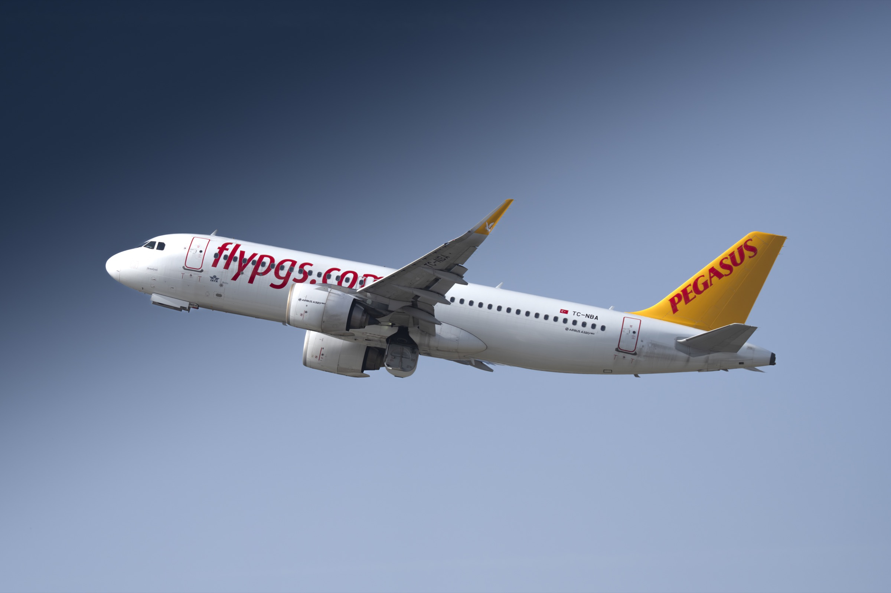
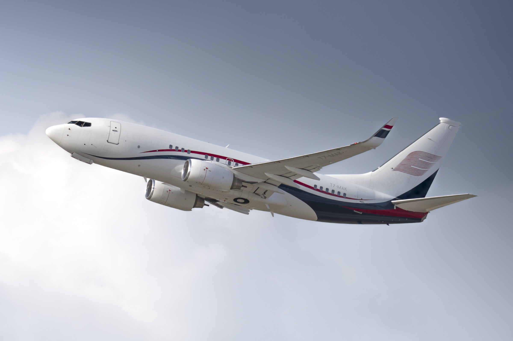
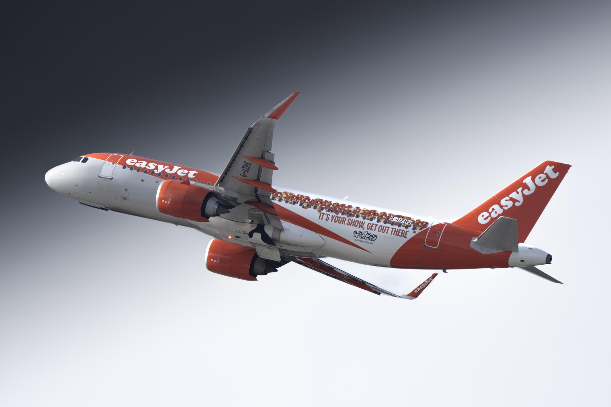
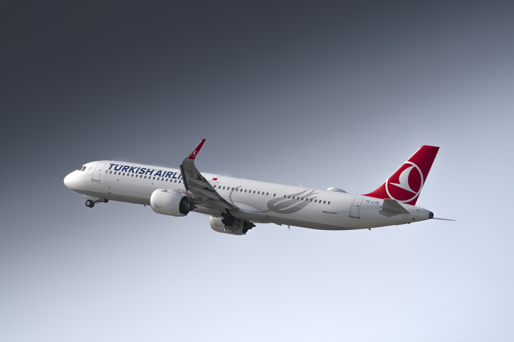
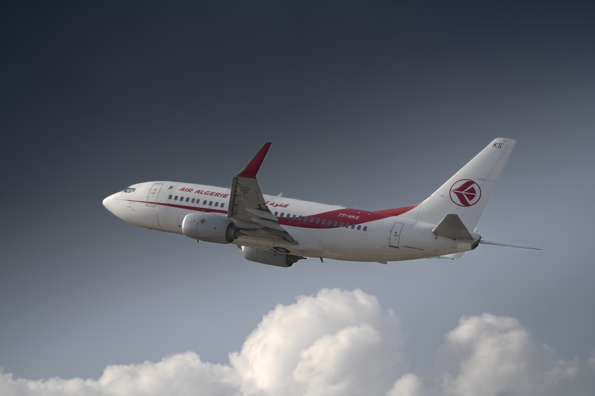
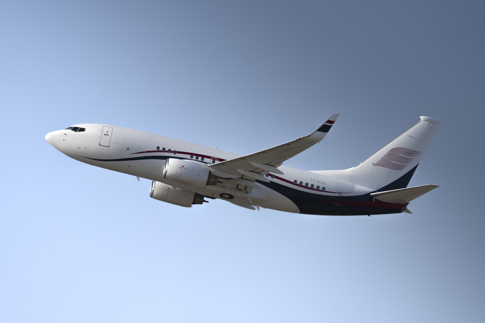
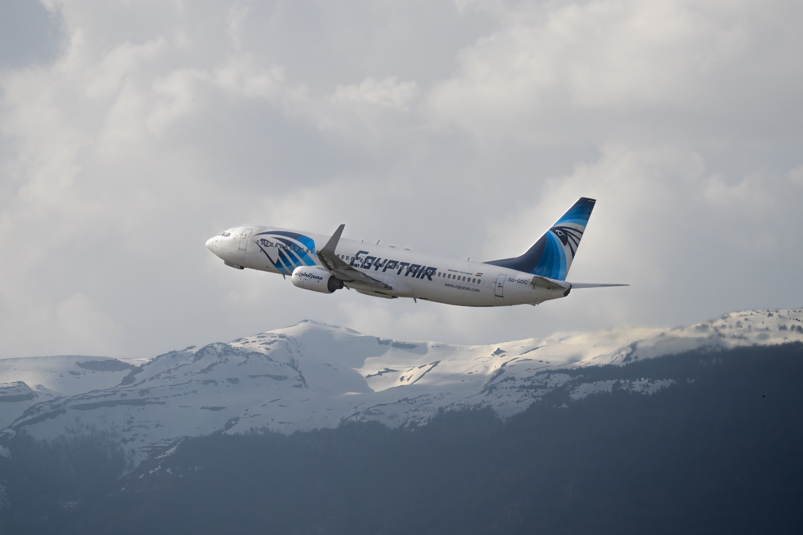
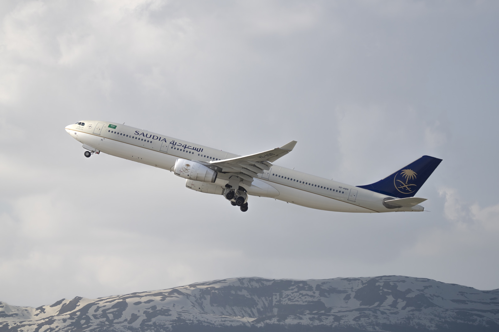
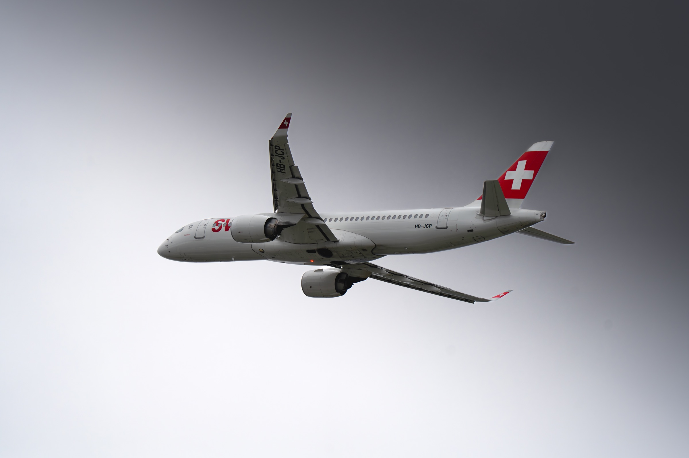
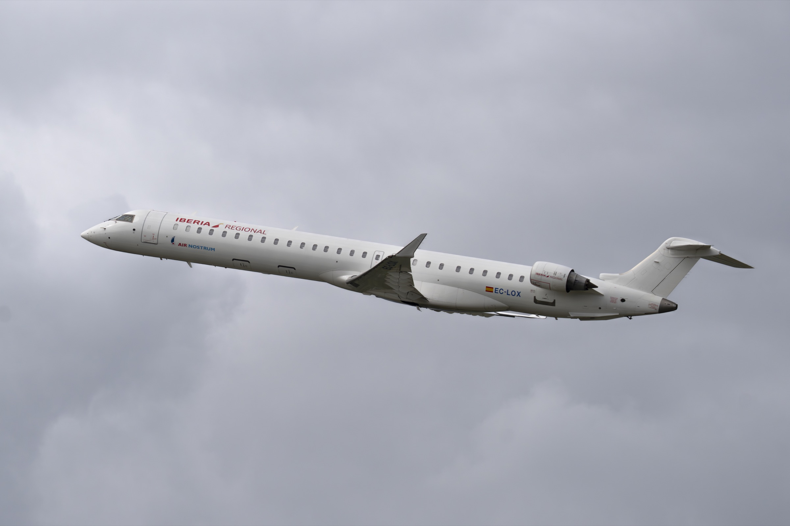
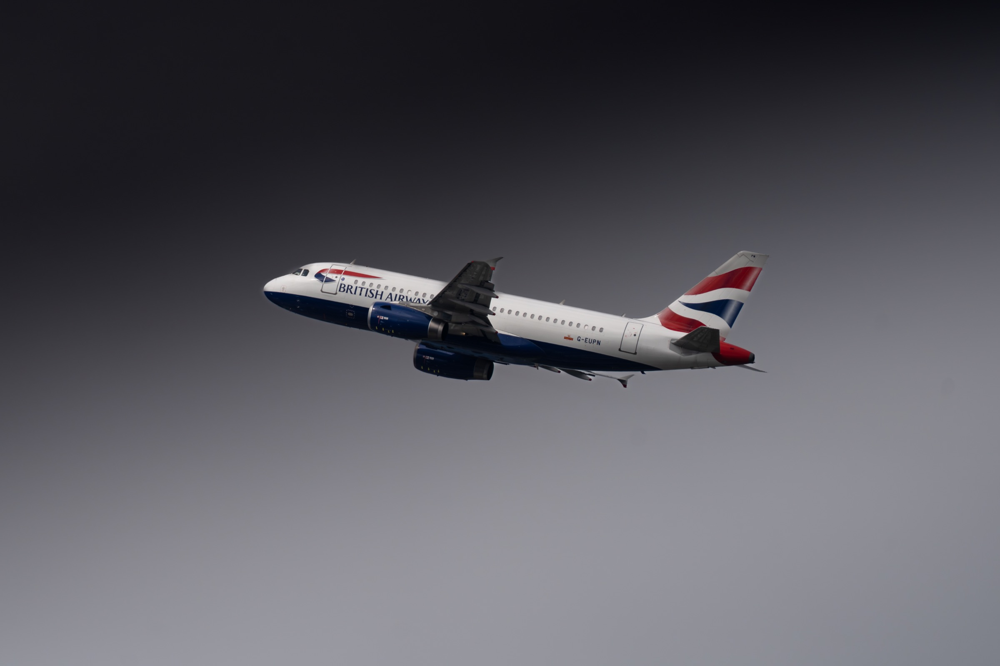
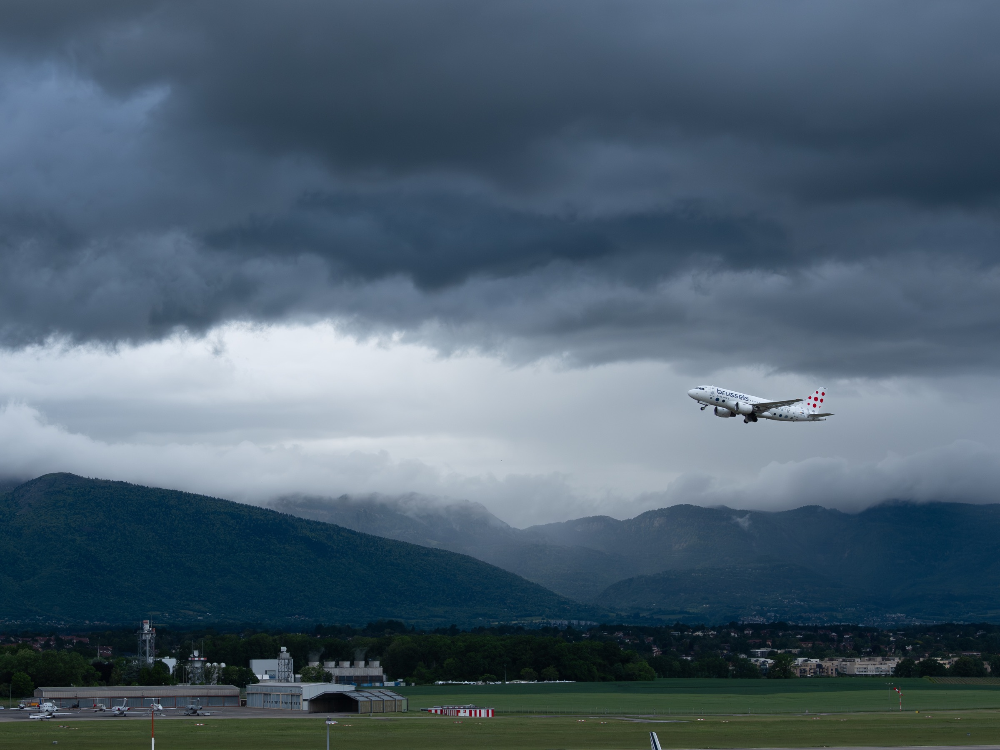
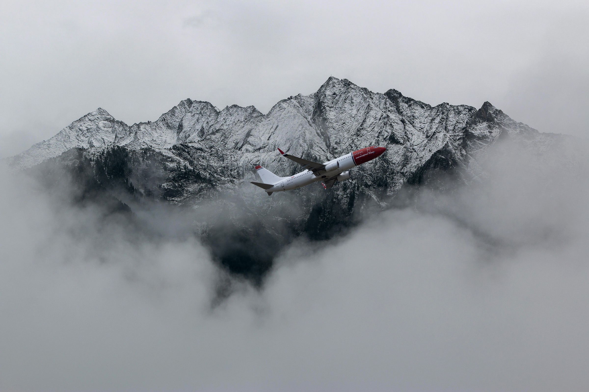